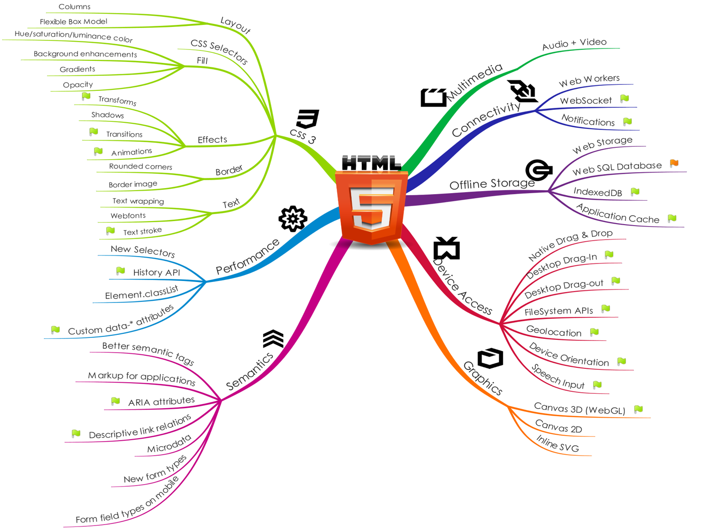
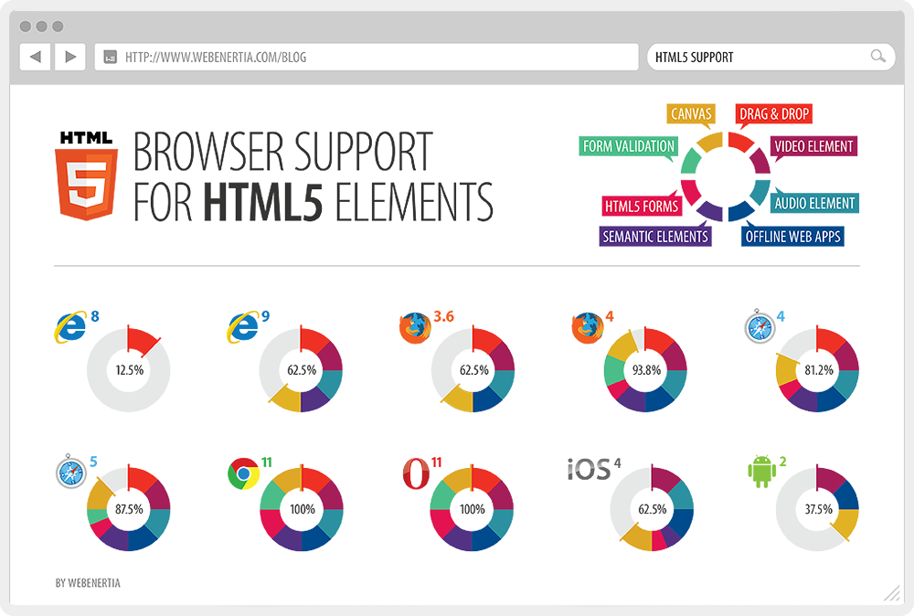
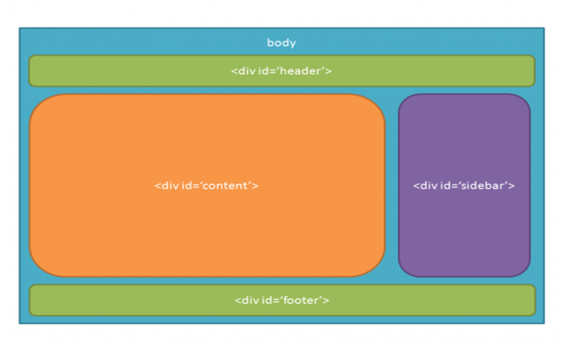
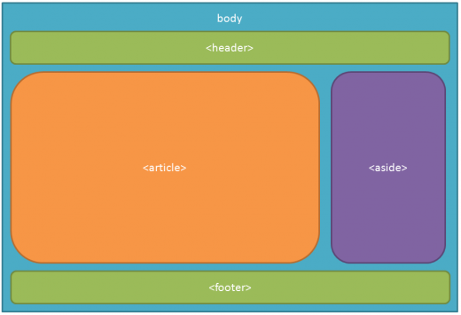
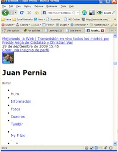

Oradores: @lujanfernando / @agustin107
¿Qué vamos a ver?

HTML 5
¿Qué es HTML?
Estructura básica
HTML5 - Nuevos Tags
CSS 3
¿Qué es CSS?
Identificación de Elementos
CSS3 - Nuevas Propiedades
¿Qué vamos a hacer?
HTML 5
Página web para eventos
CSS 3
Dar estilo a la página
¿Qué es HTML 5?
Es la quinta revisión importante del lenguaje básico de la World Wide Web, HTML
¿Pero qué es HTML?
HTML es un lenguaje de marcado para la elaboración páginas web.
HTML -> de las siglas Hyper Text Markup Language
¿Qué es un lenguaje de marcado?
Un lenguaje de marcado es un conjunto de tags o «etiquetas» de marcado
Las etiquetas describen el contenido del documento
O eso intentan...
¿Es HTML un lenguaje de programación?
N
O
NO
Los documentos HTML contienen HTML tags y texto plano (Referenciación)
Estos documentos son los llamados web pages (Páginas web)
NO
Referenciación
El lenguaje HTML basa su filosofía de desarrollo en la referenciación.
La página web contiene sólo texto mientras que recae en el navegador web (interpretador del código) la tarea de unir todos los elementos y visualizar la página final.
Componentes
HTML consta de varios componentes vitales, entre ellos...
Los elementos y sus atributos
Tipos de data
la declaración de tipo de documento
Elementos
Los elementos son la estructura básica de HTML.
Tienen dos propiedades básicas: atributos y contenido.
Cada atributo y contenido tiene ciertas restricciones para que se considere válido al documento HTML.
Un elemento generalmente tiene una etiqueta de inicio y una etiqueta de cierre.
```Atributos
La mayoría de los atributos de un elemento son pares nombre-valor, separados por un signo de igual «=» y escritos en la etiqueta de comienzo de un elemento, después del nombre de éste.
```¿Qué hay de nuevo viejo?
 W3SchoolsNuevos Elementos Semánticos en HTML5
Otros elementos nuevos
Graficos
Multimedia
HTML5 APIs
- HTML Geolocation
- HTML Drag and Drop
- HTML Local Storage
- HTML Application Cache
Soporte en navegadores
Antes...
...Después
ABURRIDOOOO!!!
OK!
Hora de la diversion!
¿Que es CSS?
CSS es un mecanismo simple para añadir estilo a los documentos web.
"La idea es..
separar la estructura de un documento de su presentación."
Pero para que sirve separarlos?
Además de que nos genera una estructura limpia de nuestro proyecto, todo encierra en la SEMÁNTICA.
La SEMÁNTICA se refiere a la interpretación del significado de un determinado elemento o representación formal.
Y esto nos lleva a?
A las búsquedas! Sí, la semántica aplicada a la web, hace que todo tenga sentido.
Un ejemplo..
En un documento común y corriente nos encontramos con elementos como:
- Titulo
- Subtitulo
- Parrafo
Seguimos con el ejemplo..
Nosotros los humanos es fácil reconocer los elementos antes nombrados, pero para los buscadores, entienden de la misma manera que nosotros?
Y si los buscadores no pueden entender, cómo van a arrojar información acertada o relevante a nuestras consultas?
Y sigue el ejemplo chs..
Es por eso que la W3C define estándares para la estructura de los documentos escritos en HTML y XML, así como también lo hace para CSS.
Vamos a lo nuestro..
Una vez definidas ciertas reglas de estructura con la semántica cómo base, está el problema del estilo.. Veámos otro ejemplo pero más gráfico:
Este es Facebook
Ya estructurado y semánticamente amigable a los buscadores, pero sin estilo.. no es Facebook no? 
Y ahí es donde entra en juego CSS
Veamos el ejemplo anterior pero con estilo:
Ventajas que tiene usar CSS
Separación de forma y contenido: diseñador y programador pueden trabajar independientemente.
Precisión: La utilización del mismo, permite un control mucho mayor sobre el diseño.
Mantenimiento: Reduce notablemente el tiempo de mantenimiento cuando es necesario introducir un cambio.
Posicionamiento: Las páginas separadas en la estructura y presentación, tienen un código más limpio porque no llevan diseño, sólo contenido. Google navega obviando el diseño.
¿Cómo funciona?
Las hojas de estilos están compuestas por una o más reglas.
Las reglas tienen dos partes: un selector y la declaración.
A su vez la declaración está compuesta por una propiedad y el valor que se le asigne
Y CSS3?
Nos trae:
- Nuevas posibilidades de decoración
- Menos markup
- Menos dependencia de Javascript
- Mayor control